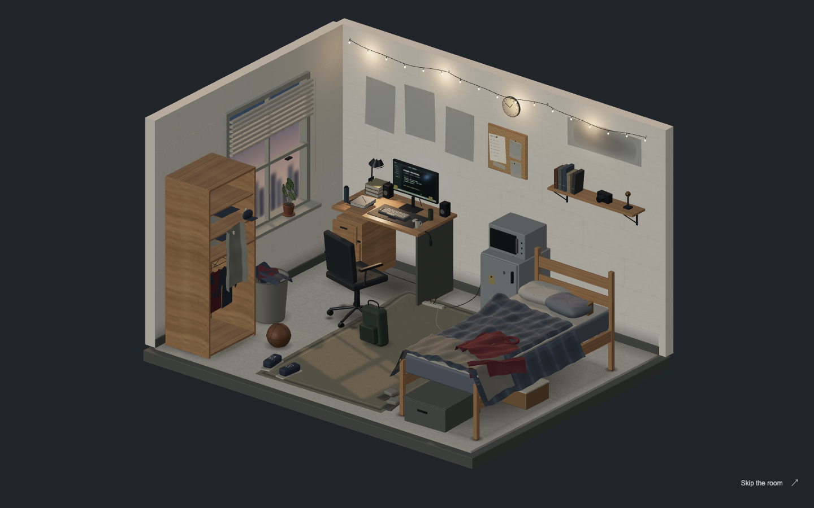
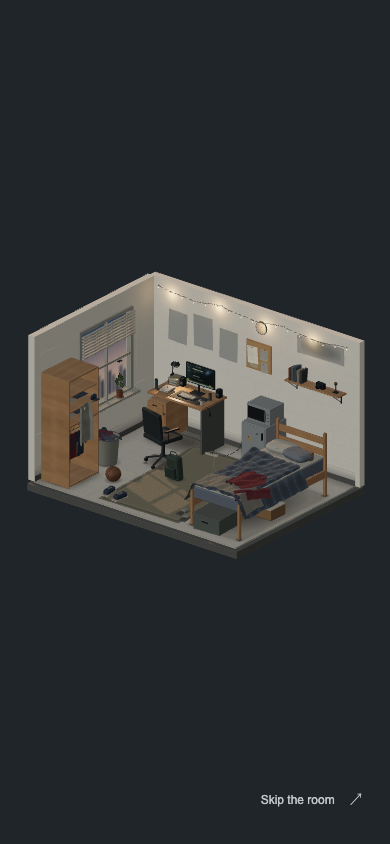
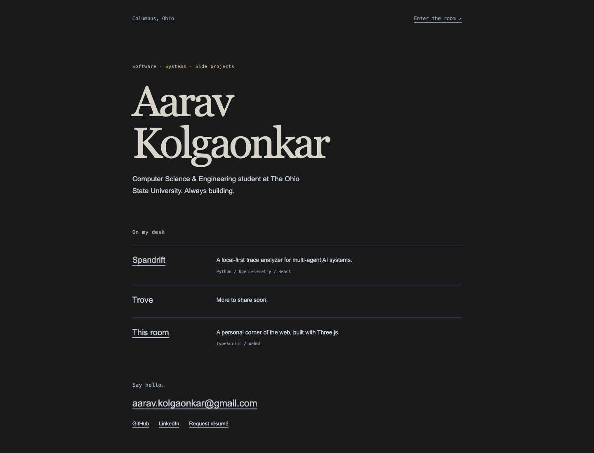
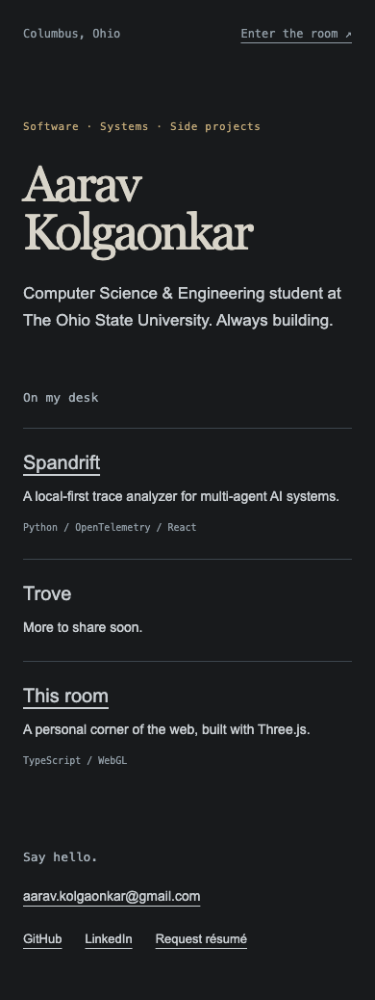

A room, in six passes.
Each phase captured at 1440 × 900 and 390 × 844. The original scene remains available at ?legacy=1. The final render includes adaptive quality and a linked HTML portfolio.
Final


Plain HTML portfolio


Real poster/photo images and a résumé URL were not supplied. Gray paper is intentional; no substitute logos were drawn. This remains a procedural render, not a photograph or Blender bake. Physical Android performance is unverified.